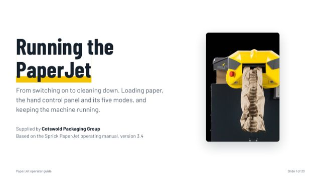
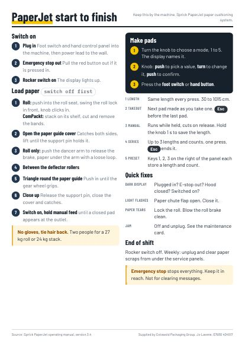
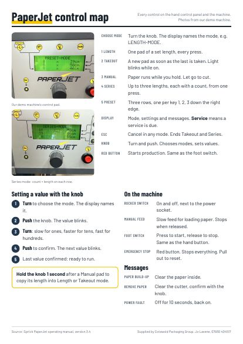
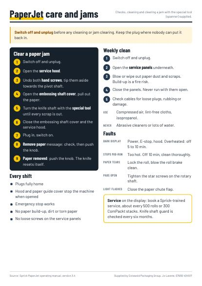

Operator guide
Start to finish: set-up, loading a roll or ComPackt, every mode on the control panel, opening the machine, jams, cleaning and faults.
Training slides and print-ready cards for the Sprick PaperJet paper cushioning machine. Switching on, loading paper, the hand control panel and its five modes, cleaning and clearing jams.

Open the guide and press Present to show it full screen. Use the PDF buttons to download, email or print. Print the cards and keep them by the machine.

Start to finish: set-up, loading a roll or ComPackt, every mode on the control panel, opening the machine, jams, cleaning and faults.

Switch on, load paper, make pads, quick fixes. One A4 sheet.

Every button, the knob and the display messages on one page.

Pre-shift checks, the weekly clean and clearing a jam with the special tool.
Up to 1.2 metres of paper a second, cut to any length from 30 cm to 1015 cm.
Length, Takeout, Manual, Series and three preset keys, all from one knob and a foot switch.
A weekly clean-out of paper scraps. Jams clear with the special tool in the box.